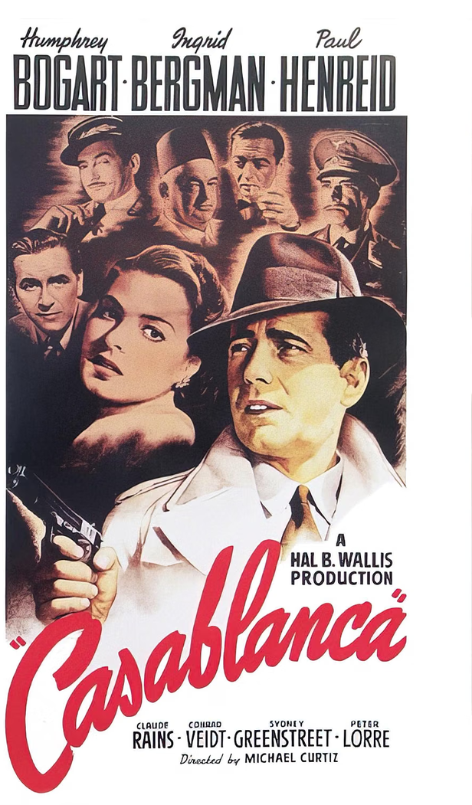
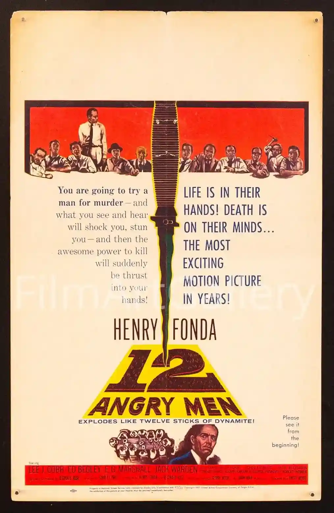
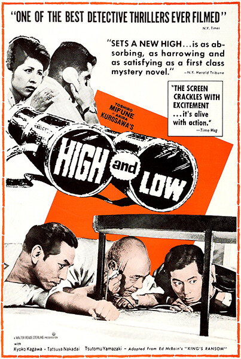
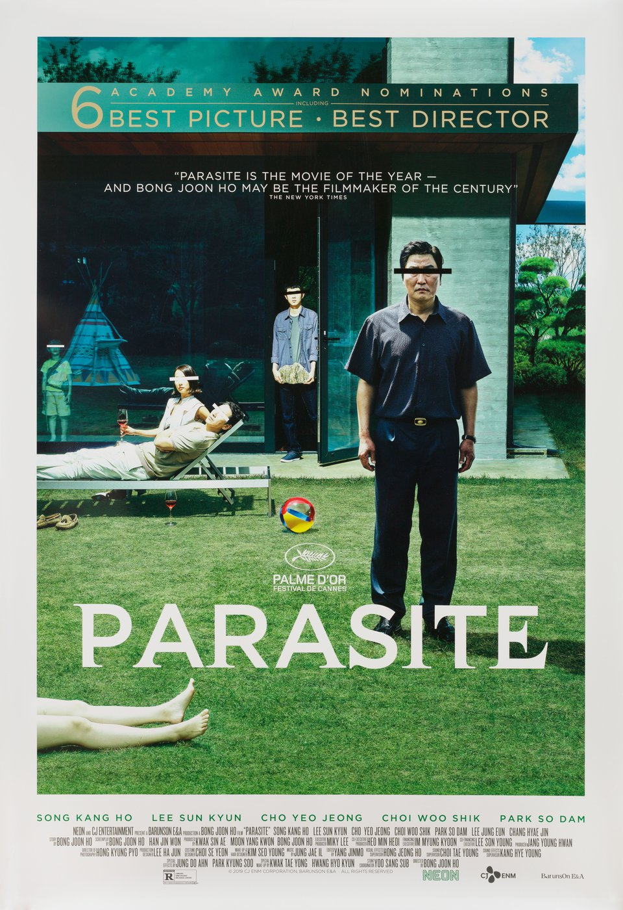
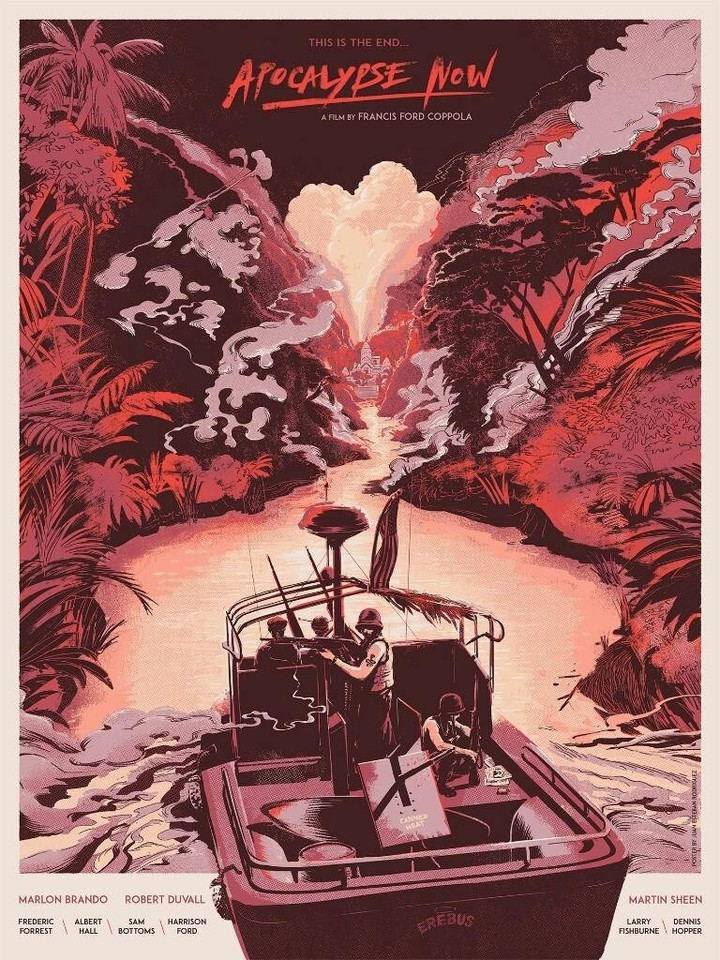
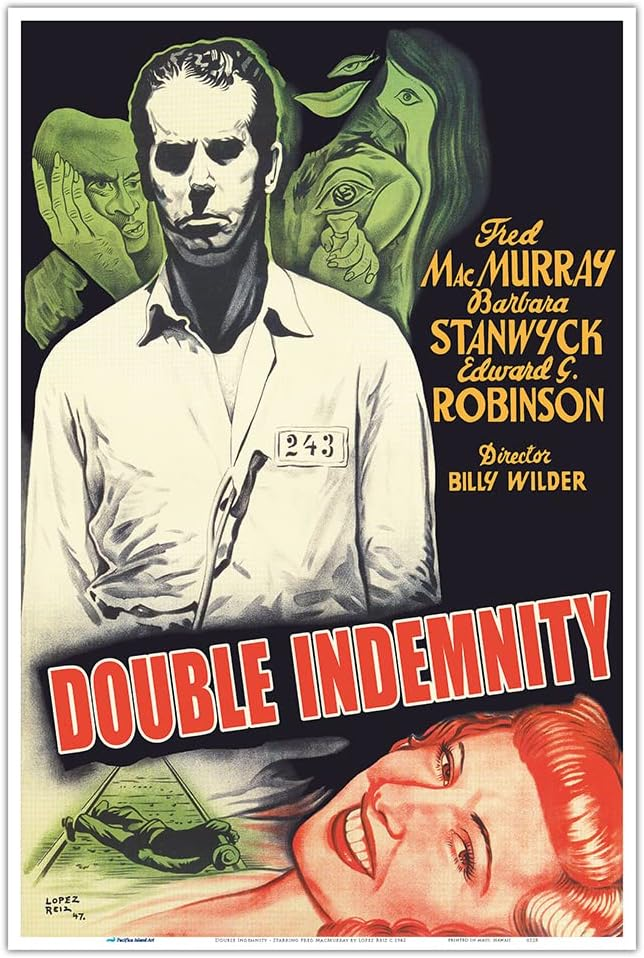
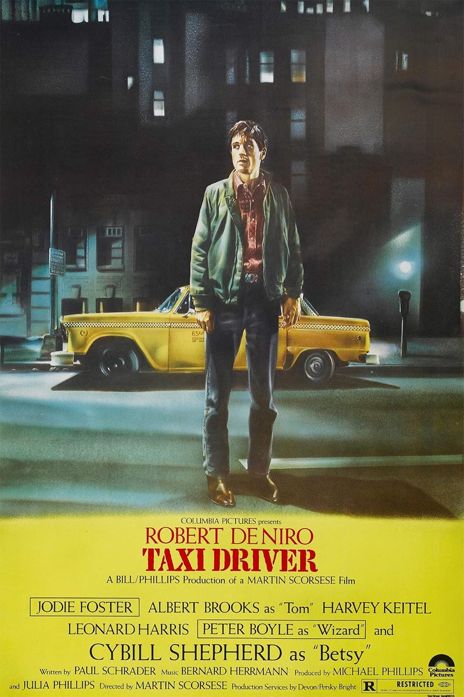

Here are a few films on my watchlist; films that I intend to see soon and really, that I should have already seen by now. In no particular order

1942 · Michael Curtiz

1957 · Sidney Lumet

1963 · Akira Kurosawa

2019 · Bong Joon-ho

1979 · Francis Ford Coppola
2015 · Quentin Tarantino

1944 · Billy Wilder

1976 · Martin Scorsese